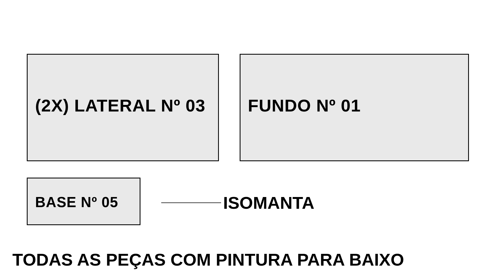

Padrão de desenho para a TV da embalagem
O painel da embalagem mostra uma camada por vez, em tela cheia, para quem está embalando ler a 4 metros de distância. Este documento diz como preparar o desenho para ele chegar lá do jeito certo — e agora o caminho é direto: o que você desenha na folha é exatamente o que aparece na TV.
1. O que mudou da versão 1 para esta
A versão 1 usava A3 paisagem com carimbo e tabela, e o sistema tentava adivinhar, por imagem, qual parte da folha era o desenho: comparava as páginas entre si, apagava o que se repetia, cortava faixas brancas e colava o resto. Funcionava, mas com três custos medidos nos painéis já publicados:
| Folha A3 (v1) | Folha TV 16:9 (v2) | |
|---|---|---|
| Proporção que chega na TV | varia de camada para camada (2,17:1 a 2,55:1 no produto publicado) | sempre 16:9 — a mesma da área do player |
| Aproveitamento da tela | 70 % a 82 % da altura disponível | 100 % |
| Resolução da imagem | ≈ 1 080 px de largura | ≈ 2 994 px (2,8× mais pixels por traço) |
| Onde o texto é lido | só na faixa de 24 mm a 178 mm da folha — nome fora dela some da lista, sem avisar | folha inteira |
| Tamanho do desenho na tela | referência | 22 % a 42 % maior |
Na prática: o desenho fica maior, mais nítido e igual em todas as camadas, e nada mais depende de heurística de imagem.
2. A folha TV
480 × 270 mm (16:9 exato), paisagem, uma camada por página, em qualquer escala. Margem de segurança de 12 mm em volta: nada de peça ou texto fora dela.
Entra na folha
- As peças da camada, em vista de topo, preenchidas em cinza claro
- O nome de cada peça, dentro dela ou encostado nela
- Chamadas com linha para o que não é peça (ISOMANTA, ISOPOR, KIT)
- As peças das camadas anteriores, em contorno fino e sem nome
- Uma linha de observação, quando houver cuidado especial
Não entra
- Moldura, carimbo, logo, rodapé (desenhista, data, página)
- Tabela de embalagem (caixa, tabuleiro, isopor, medidas)
- Nome do produto e número da camada — o player já mostra
- Cotas e dimensões: na TV viram ruído
- Vistas laterais, cortes e detalhes
- Qualquer texto que não seja para aparecer na lista
3. Textos: a regra de ouro
| Situação | Escreva assim | O painel mostra |
|---|---|---|
| Uma peça | BASE Nº 05 | ×1 BASE Nº 05 |
| Várias peças iguais | (2X) LATERAL Nº 03 | ×2 LATERAL Nº 03 |
| Nome em duas linhas | PORTA BASCULANTE e abaixo Nº 06 | ×1 PORTA BASCULANTE Nº 06 |
| Material de proteção | ISOMANTA, ISOPOR, KIT, com linha de chamada | ×1 ISOMANTA |
| Cuidado na montagem | TODAS AS PEÇAS COM PINTURA PARA BAIXO | faixa amarela acima do desenho, fora da lista |
| Peça que já está na caixa | desenhe o contorno fino e não escreva o nome | nada — ela é contexto, não item da camada |
Regras
- Tudo em maiúsculas, uma peça por texto. Não junte duas peças na mesma linha.
- A quantidade vem antes do nome, no formato
(nX). Sem quantidade = 1. - O painel separa observação de peça pela forma da frase: começa com verbo (
DOBRAR,VIRAR,POSICIONAR,CONFERIR,ENCAIXAR,APLICAR,FECHAR) ou contémPARA CIMA / PARA BAIXO / PARA FRENTE / PARA TRÁS,COM PINTURA / SEM PINTURA,ATENÇÃO,ORIENTAR. Fora desses casos, vira peça. - Uma observação por camada. Se houver duas, o painel junta as duas na mesma faixa.
- Não escreva medidas soltas (
1430 X 408 X 113) nem palavras de tabela (DESCRIÇÃO,TIPO,QTDE): o painel descarta, mas é ruído na folha. - Fonte Arial. A fonte padrão do SolidWorks já saiu com acento trocado no PDF (
INTERMEDIÁRIAvirouINTERMEDIËRIA). Arial não tem esse problema.
4. Tamanhos e traços
Os números abaixo vêm da conta que importa: a folha de 270 mm de altura ocupa a altura inteira da área de desenho do player, e a pessoa lê de pé, a cerca de 4 metros.
Altura do texto (altura da letra maiúscula, na folha de 270 mm)
| Tamanho da TV | Recomendado | Mínimo | Como fica na tela |
|---|---|---|---|
| 43 polegadas | 14 mm | 11 mm | letra de 21 mm na tela |
| 50 polegadas | 12 mm | 10 mm | letra de 21 mm na tela |
| 55 polegadas | 11 mm | 9 mm | letra de 21 mm na tela |
| 65 polegadas | 9 mm | 8 mm | letra de 20 mm na tela |
Na dúvida, use 12 mm — é o que o modelo DXF já traz e atende TV de 50 polegadas ou maior a 4 metros. Só desça para 10 mm quando a peça for pequena demais para caber o nome. Confirme com o PPCP o tamanho da TV do setor antes de fechar o padrão.
Traços e preenchimento
| Elemento | Espessura | Observação |
|---|---|---|
| Contorno da peça desta camada | 0,8 mm | preto, com preenchimento cinza claro (10 % a 15 %) |
| Linha de chamada | 0,6 mm | preta, ligando o texto ao ponto |
| Peça de camada anterior | 0,4 mm | cinza, sem preenchimento e sem nome |
Traço abaixo de 0,4 mm chega à TV com menos de dois pixels e some a 4 metros. Fundo da folha sempre branco, traço preto: é o contraste máximo, e o player exibe o desenho sobre fundo escuro.
5. Peças das camadas anteriores
Desenhar em contorno fino o que já foi colocado na caixa nas camadas anteriores dá à pessoa da embalagem a leitura mais importante do painel: o que é novo nesta camada e o que já está lá dentro. Custa pouco (a geometria já existe na camada anterior) e resolve a dúvida mais comum do chão de fábrica.
A única exigência: essas peças vão sem nome. Se levarem nome, voltam para a lista de componentes como se tivessem que ser embaladas de novo.

modelo-folha-tv.pdf (2 páginas: a camada 1 e a camada 2 já com as peças anteriores em contorno fino). É exatamente isso que aparece na TV.6. Exportação do PDF
- Uma página por camada, na ordem em que as peças entram na caixa. A primeira página é a primeira camada — o painel segue a ordem das páginas.
- Todas as páginas no mesmo formato 480 × 270 mm. Basta uma página fora do 16:9 para o PDF inteiro cair no caminho antigo, com recorte automático.
- No SolidWorks: Salvar como → PDF → Opções: marque "Exportar todas as folhas" e deixe desmarcado "Converter texto em curvas / linhas". O texto precisa continuar sendo texto — é dele que sai a lista de componentes. PDF com texto em curvas gera lista vazia.
- Nome do arquivo = nome do produto, sem prefixo:
SAPATEIRA VIVARE.pdf, nãoEMBALAGEM_SAPATEIRA_VIVARE_VOL1.pdf. O gerador usa o nome do arquivo como nome do produto. Mais de um volume:SAPATEIRA VIVARE VOL 2.pdf. - Só o PDF. Não é preciso gerar imagem, DXF ou qualquer outro formato.
folha TV 16:9, a folha está no padrão.7. Modelo de folha
| Arquivo | Para que serve |
|---|---|
modelo-folha-tv.dxf | Base para criar o formato de folha "TV" no SolidWorks. Já vem com as camadas DESENHO, PECA_ANTERIOR, TEXTO, CHAMADA e OBSERVACAO nas espessuras certas, e um exemplo de peça, chamada e observação nos tamanhos certos. As camadas GUIA_NAO_PLOTAR e NOTAS_NAO_PLOTAR são referência de posição e já estão marcadas para não plotar — apague o exemplo antes de desenhar. |
modelo-folha-tv.pdf | Exemplo pronto de duas camadas, para comparar com o que você desenhou. |
8. Checklist antes de enviar
- Folha 480 × 270 mm (16:9), uma camada por página, na ordem de embalagem
- Sem moldura, carimbo, logo, rodapé, tabela, cotas e nome do produto
- Peças da camada em cinza claro, contorno 0,8 mm
- Peças das camadas anteriores em contorno fino de 0,4 mm, sem nome
- Nome de cada peça em Arial maiúscula, 12 mm (mínimo 10 mm)
- Quantidade no formato
(nX)antes do nome - Observação, se houver, em uma linha, começando com verbo ou com PARA CIMA / PARA BAIXO
- Nada escrito na folha além do que deve aparecer na lista
- PDF exportado com texto como texto (teste: selecionar e copiar)
- Arquivo nomeado com o nome do produto
- No gerador, a etapa 3 mostra
folha TV 16:9
9. Se ainda for usar a folha antiga
Vale o padrão v1, que continua aceito: A3 paisagem, e os nomes das peças obrigatoriamente entre 24 mm e 178 mm de altura da folha — fora dessa faixa o nome não entra na lista e ninguém é avisado. O recorte automático continua tirando moldura, carimbo e tabela comparando as páginas, o que exige pelo menos duas páginas do mesmo tamanho.